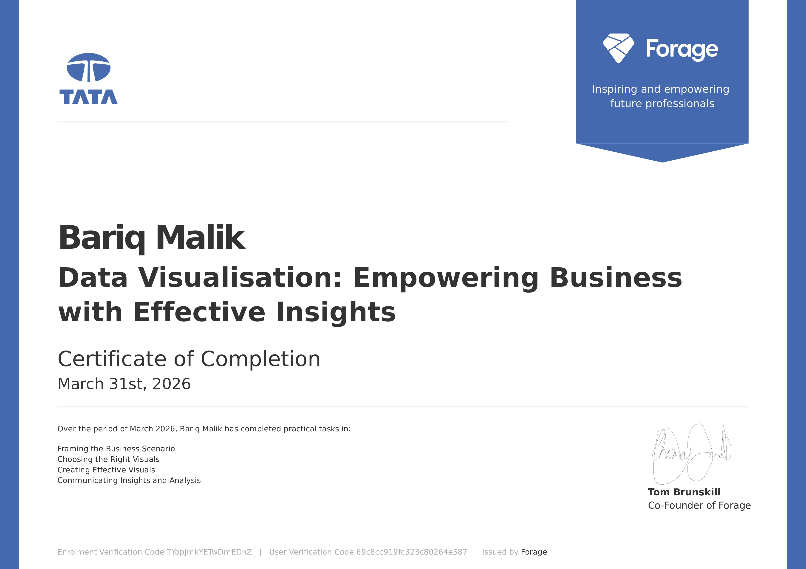
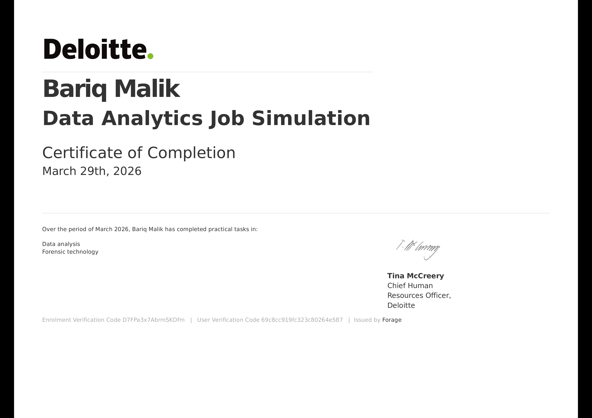

I'm a Full-Stack Web Developer with a passion for building innovative and user-friendly applications. I specialize in creating end-to-end web solutions, from front-end interfaces to back-end logic. With a strong foundation in computer science and hands-on experience in various technologies, I'm dedicated to delivering high-quality work that meets both technical and business requirements. I enjoy solving complex problems and continuously expanding my skillset to stay updated with the latest trends in web development.
Chandigarh University, Mohali
Year: 2026 - Present
S.R.M Welkin School, Sopore, Kashmir
Year: 2024

